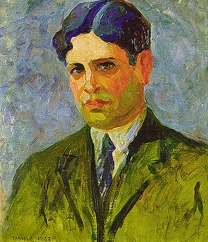

Semana de arte moderna
Trabalho dos grupos:

-
Praia do nordeste
- Autor: John Graz
- Ano: 1922
- ler mais

-
Retrato
- Autor: Zina Aita
- Ano: 1920
- ler mais

-
Samba
- Autor: Di Cavalcanti
- Ano: 1925
- ler mais

-
Retrato de Oswald de Andrade
- Autor: Tarsila do Amaral
- Ano: 1922
- ler mais

-
Retrato de Ronald de Carvalho
- Autor: Vicent do Rego Monteiro
- Ano: 1921
- ler mais

-
O homem amarelo
- Autor: Anita Malfatti
- Ano: 1915-1916
- ler mais

-
Colombina
- Autor: Ferrignac
- Ano: 1921
- ler mais
Fotos do evento